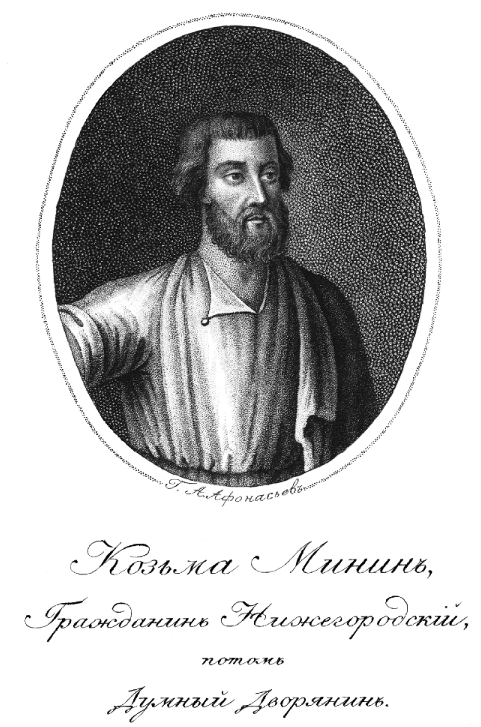
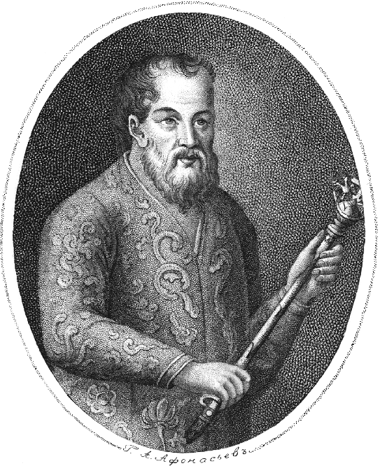
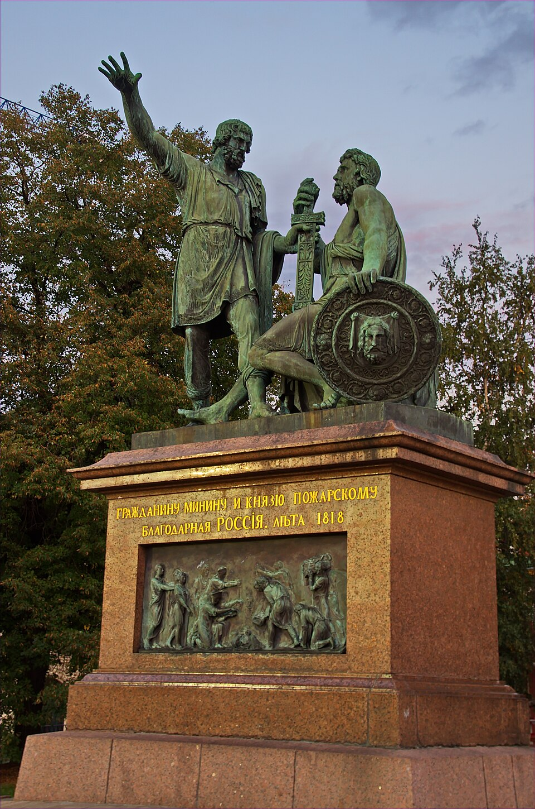
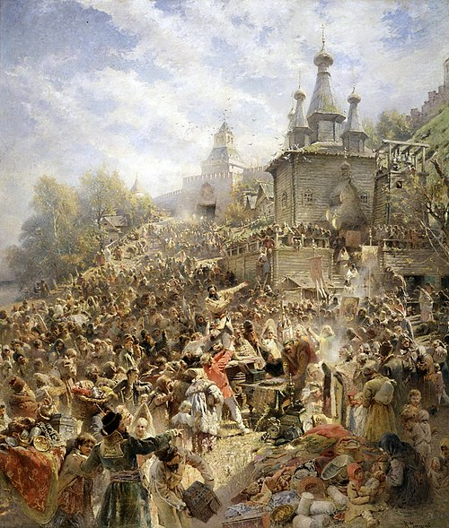
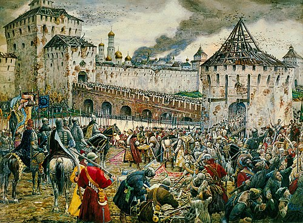

Второе ополчение
Второе ополчение 1612 года возглавил нижегородский купец Кузьма Минин, который пригласил для предводительства военными операциями князя Пожарского. В феврале Второе ополчение двинулось в поход к столице.


Однако в марте подмосковный стан, оставшийся от Первого ополчения, присягнул Лжедмитрию III. Второе ополчение Минина и Пожарского не могло выступить к столице, пока там распоряжались сторонники самозванца. В этих условиях лидеры второго ополчения сделали своей столицей Ярославль, где было создано такое же временное правительство, как у первого ополчения — «Совет всей земли». Ополчение простояло здесь четыре месяца, потому что надо было «строить» не только войско, но и «землю». Замосковные, волжские и поморские города посылали в Ярославль свои военные силы и собранную казну. Кузьма Минин заново организовал систему управления территорией, отказавшейся признать власть Лжедмитрия III. Сам самозванец недолго продержался в Пскове. Псковский «вор» обложил подконтрольную им территорию огромными налогами. Кроме того, в отличие от своих предшественников, он оказался бездарным военным руководителем и не мог даже отогнать от Пскова польских рейдеров Лисовского. Против Лжедмитрия III возник заговор, самозванца пленили и отправили под конвоем в Москву, где он и погиб по дороге в результате нападения польских «воров». Пожарский хотел собрать «общий земский совет» для обсуждения планов борьбы с польско-литовской интервенцией и того, «как нам в нынешнее злое время безгосударными не быть и выбрать бы нам государя всею землёю». Для обсуждения предлагалась и кандидатура шведского королевича Карла-Филиппа, который «хочет креститься в нашу православную веру греческого закона». Однако земский совет не состоялся. В начале августа 1612 года ополчение вышло из Ярославля, а 18 (28) августа 1612 от Троице-Сергиева монастыря двинулось к Москве, где 22 августа (1 сентября) утром вступило в сражение с войсками гетмана Ходкевича, пытавшегося соединиться с польским гарнизоном, контролировавшим Московский кремль; Но 23 августа польское воинство Ходкевича отступило от Москвы. Важную роль в победе Второго ополчения сыграл польский перебежчик Павел Хмелевский, предпринявший атаку своим эскадроном и отрядом российских дворян на измождённые польские войска. Весь обоз с продовольствием для «кремлёвских сидельцев» был захвачен ополчением. Сдача гарнизона Кремля и Китай-города стала только делом времени. «Сидение же было [их] в Москве таким жестоким, что не только собак и кошек ели, но и русских людей убивали. И не только русских людей убивали и ели, но и сами друг друга убивали и ели. Да не только живых людей убивали, но и мертвых из земли выкапывали: когда взяли Китай, то сами видели, глазами своими, что во многих чанах засолена была человечина». 22 октября (1 ноября) ополчение под предводительством Кузьмы Минина и Дмитрия Пожарского штурмом взяли Китай-город; гарнизон Речи Посполитой отступил в Кремль, 26 октября (5 ноября) был заключен договор о капитуляции польско-литовского гарнизона Кремля. 27 октября (6 ноября) 1612 года последние остатки польского гарнизона вышли из Кремля. Из Ярославля князь Пожарский выступил со списком Казанской иконы Божией Матери, доставленным ранее из Казани. После взятия Кремля он повелел воздвигнуть «храм Пресвяте́й Богородице честна́го Ея́ в церковь Введения и о́ную икону внесе́ и постави ту в церкви в своем приходе. Царь Михаил Феодорович слышав о чудесе́х уста́ви… ход Октября в 22 день, егда́ царствующий град очистися», а икона была перенесена из Введенского храма на Лубянке в Казанский храм на Никольской улице.


